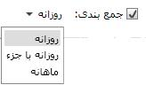
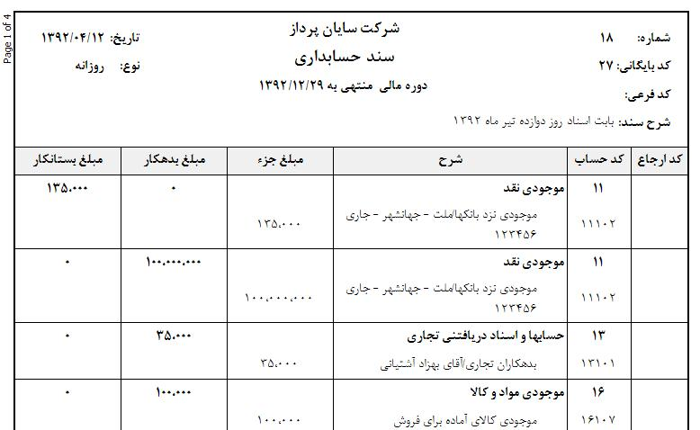

در این بخش می توانید از سند های ثبت شده در سیستم گزارش هایی با فیلتر های مختلف تهیه کنید گاهی لازم است در انتهای یک روز یا یک ماه خلاصه ای از گردش حساب ها را به صورت گزارش در اختیار داشته باشید. برای این کار می توانید از این قسمت نسبت به تهیه گزارش مورد نظرتان اقدام نمایید.

همان طور که در شکل بالا مشاهده می کنید، در این صفحه هم می توانید با استفاده از گزینه های موجود در صفحه، یک دوره مالی و یا یک بازه زمانی خاص برای گزارش مورد نظرتان تعیین نمایید. در این صورت گردش حساب های خود را در قالب گزارش اسناد به صورت خلاصه خواهید داشت.
برای تهیه سند خلاصه باید از این گزینه استفاده کنید. اسناد خلاصه شما می تواند در سه نوع «روزانه»، «روزانه با جزء» و «ماهانه» باشد که در ادامه هر یک را توضیح می دهیم.
«روزانه»: اگر جمع بندی سند خلاصه شما از نوع روزانه انتخاب شده باشد، شما می توانید برای هر روز در بازه تاریخی انتخاب شده گزارش خلاصه ای از گردش حساب بدهکار و بستانکار در هر یک از معین ها داشته باشید، به نمونه زیر توجه کنید.

«روزانه با جزء»: اگر بخواهید سند خلاصه روزانه شما جزئیات حساب های تفصیل را نیز نمایش دهد باید نوع جمع بندی سند خلاصه «روزانه با جزء» انتخاب نمایید.
در شکل بالا مشاهده می کنید که در این گزارش برای گردش حساب کل «موجودی نقد» و معین «موجودی نزد بانک ها» تفصیل مربوطه نیز در کنار نام معین قید شده است.
«ماهانه»: اگر از باکس جمع بندی گزینه ی ماهانه را انتخاب کنید سپس بر روی گزینه ی چاپ سند خلاصه کلیک کنید در گزارشی که دریافت می کنید مشاهده خواهید کرد که سیستم برای هر ماه تنها یک سند صادر می کند